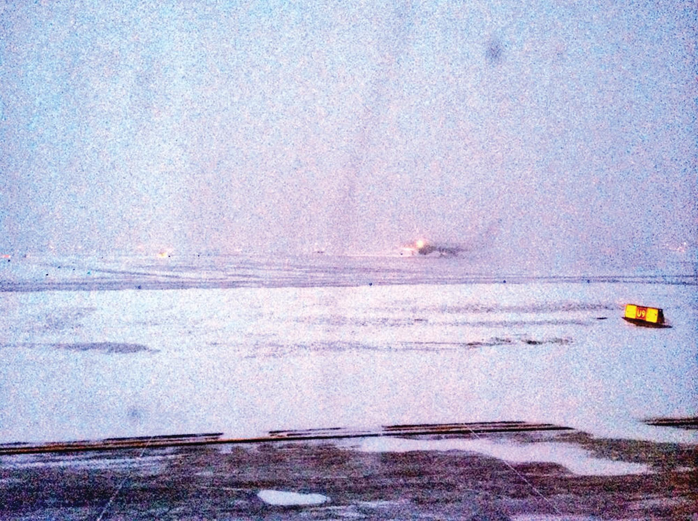
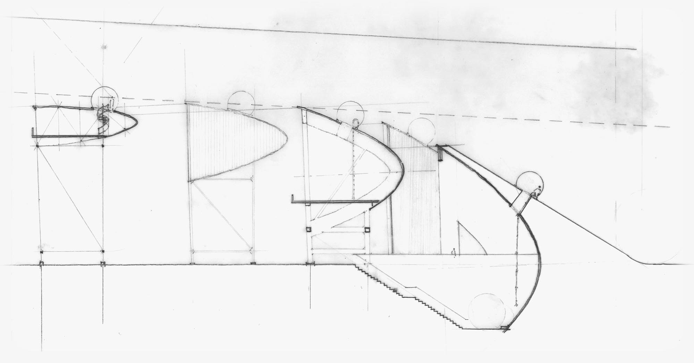
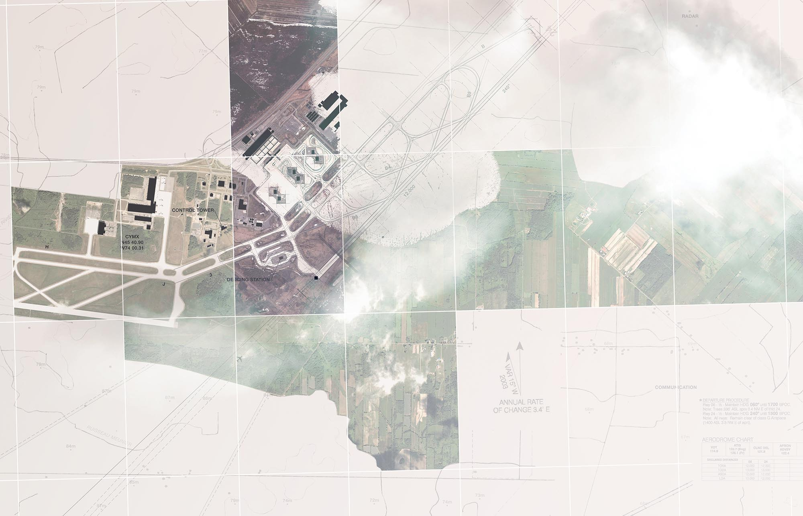
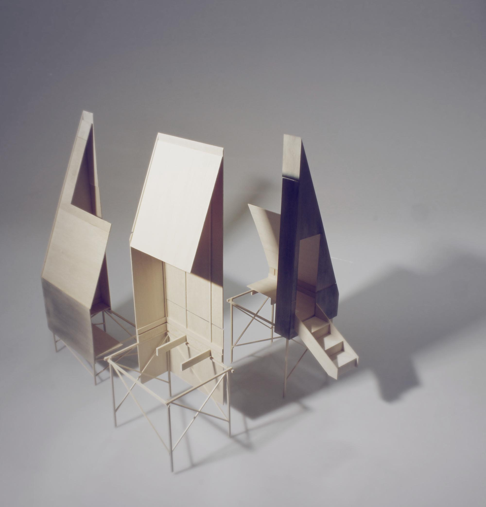
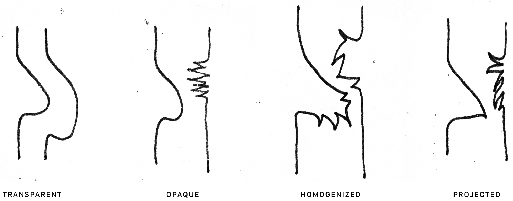
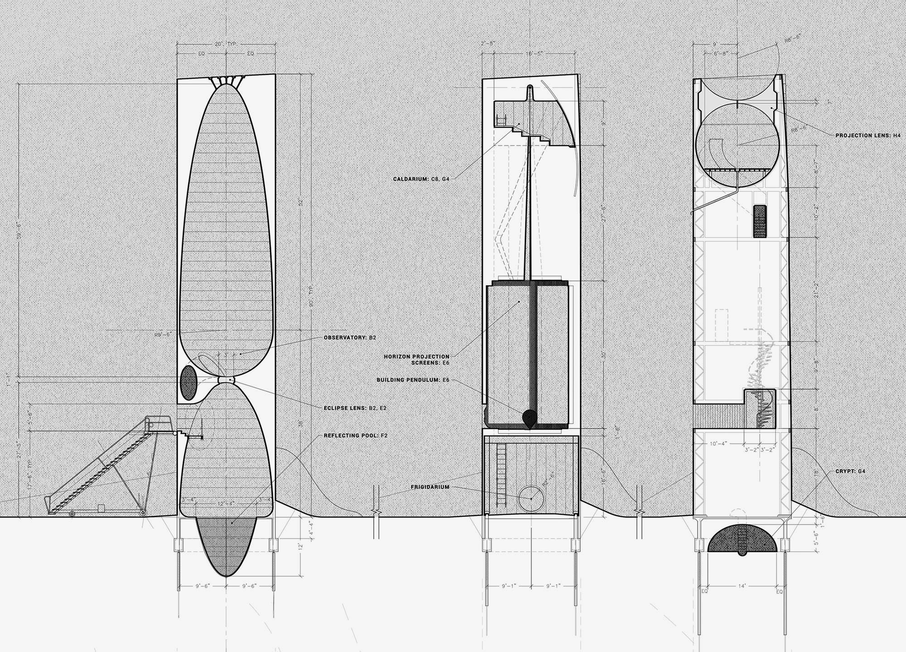
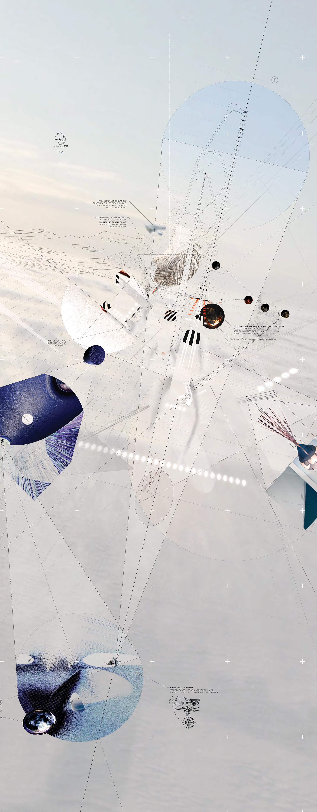

(Click images to zoom. Click circle to return to top.)

At its opening in 1975, Montréal-Mirabel International was the largest airport ever designed, and promised to serve as Canada’s foremost international hub.

By 2014, the airport was used solely for cargo craft, portions of the taxiway had been appropriated as racetrack, and the only remaining terminal was being demolished.

Here, where expectations are set adrift, a campground is introduced at the south-west end of runway 06/24, directly under the approach path of some of the largest cargo planes.

The campground is designed to conflate scales, yes, but more importantly to shake one’s sense of place, certainty, and identity in-between.


As one traverses the threshold of the cabin, the interior and exterior conditions are projected onto each other in ways that reveal new vantage points and trespasses: a continual cycle of reference and expectation.

Caught here are three monoliths with identities unknowable in full by either pilot, camper, or designer.

